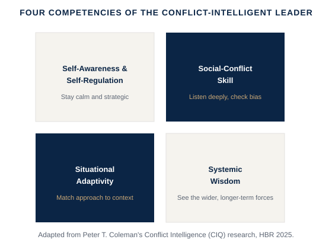

A disagreement you keep avoiding doesn't disappear — it just moves underground, where it costs you more. This is about developing the skill to engage conflict deliberately, instead of avoiding it or letting it escalate.
A disagreement between two direct reports that's starting to affect the whole team; a client relationship that's gone tense after a missed commitment; a boardroom debate that's more about ego than about the actual decision.
Columbia professor and conflict-resolution researcher Peter T. Coleman, writing in Harvard Business Review, argues that as workplace friction rises, leaders need a distinct skill he calls conflict intelligence (CIQ): the ability to read a conflict's real dynamics — not just the two people arguing, but the situational and systemic forces feeding it — and respond deliberately instead of either avoiding the discomfort or escalating it. Drawing on this research, I built a practical training model around four core competencies: self-awareness and self-regulation (staying strategic instead of reactive), social-conflict skill (listening deeply and checking your own bias before assuming the other side's), situational adaptivity (matching your approach to the context and the people in front of you, not a fixed playbook), and systemic wisdom (seeing the longer-term and wider forces the conflict sits inside). Leaders who develop CIQ don't eliminate conflict — they turn it into one of the more reliable sources of trust and innovation on a team, rather than the thing everyone quietly avoids.

Adapted by Mauro Delgado from Peter T. Coleman's Conflict Intelligence (CIQ) research, Harvard Business Review, 2025.
What actually de-escalates conflict → the four competencies of conflict-intelligent leaders, applied to a real situation.
Extended video (15-25 min), an original PDF framework/checklist, a practical application workbook, and a curated summary of Peter T. Coleman's conflict intelligence research and Amy Gallo's HBR Guide to Managing Conflict at Work.
Free if you’re an active coaching client · Subscription access for the general public opens soon.